k-Day 028｜威海的人們
起床時船已經到港了。
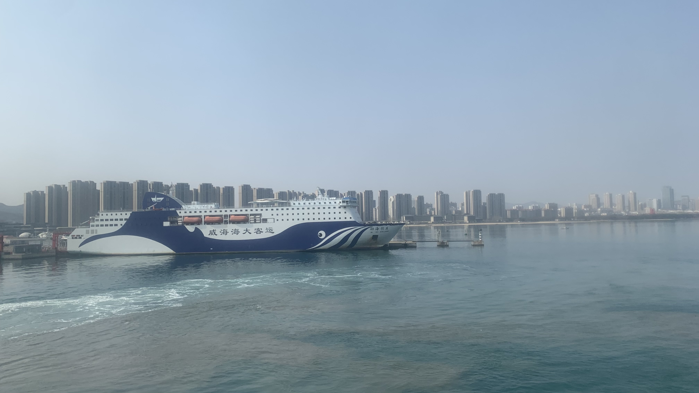
又是等到最後一個下船。
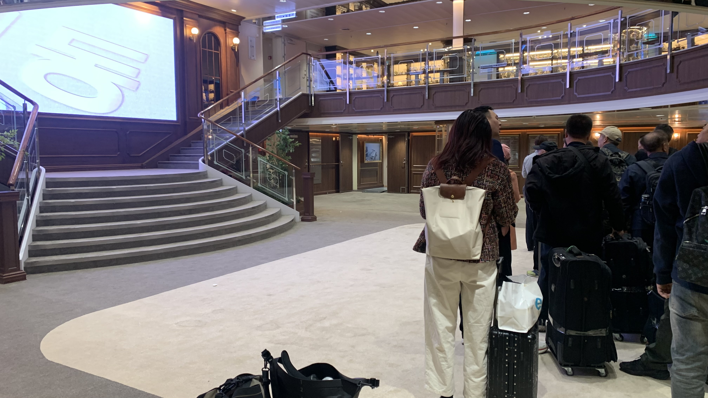
牽著二十三號進入安檢大廳，被安檢人員叫到前面走外賓通道。沿著排隊人潮往前走，經過同房的室友時他們說：「拿到車啦！」
可能比較少台灣人從這裡入境，因此被問了幾個問題。
等待時一旁管理秩序的人員問我：「第一次來大陸嗎？」
「來很多次了。」我說
「上一次是多久以前來的啊？」
「七年？八年？十年吧！」排隊的人群一陣哄笑。
另一邊像是主管的人走來，問了我的行李有沒有問題，說歡迎來大陸，就讓我離開了。
出了入境大門，是個很大的廣場。
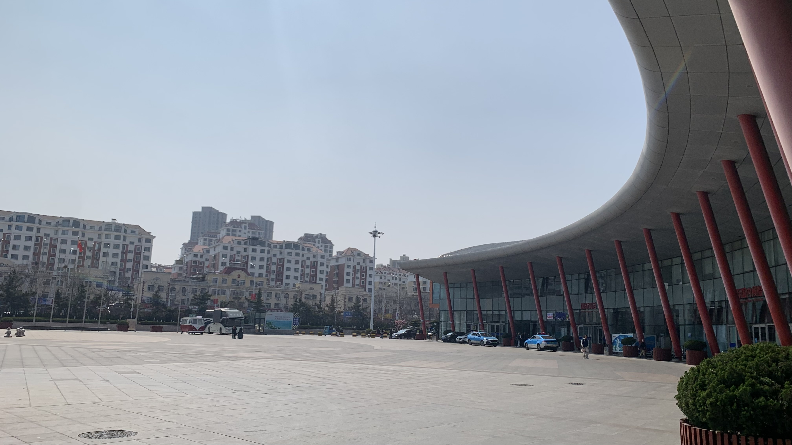
建築分為威海港的國際碼頭和國內航線的售票處兩個部門。
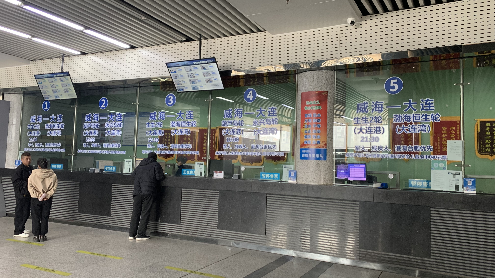
走到國內售票大廳，從這裡買了到大連的船票，晚上九點半的夜船，早上抵達。雖然這裡有國內搭船處的招牌，但櫃檯說乘船處不在這裡，晚上七點可以到約莫五百公尺外的威海碼頭上船。
櫃檯說剩下三等B艙的床位，票價310元，自行車100元。
「但是三等B沒有衛生間！」語氣中帶著提醒地和我說。
沒關係的。前兩個渡輪也都是住沒有衛生間的，也不是太麻煩。
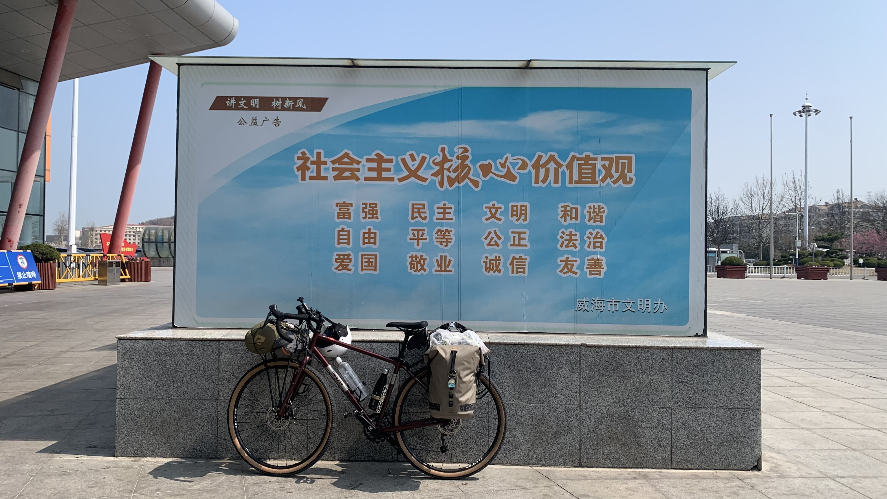
買完票想上廁所，然而廁所沒有廁紙，必須先覓食並處理網路問題。離開前先拍一張實現社會主義核心價值的愛國照片。
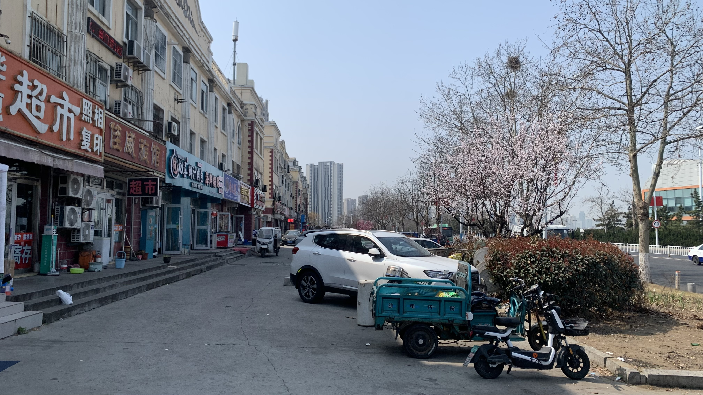
過馬路找到一間超市，果然有賣捲筒衛生紙。順便買了水和士力架充飢。
結帳後老闆問我哪裡人，我說台灣的，已在店裡的另一位中醫師客人說坐下來休息一下，於是老闆娘就搬了椅子給我坐下來聊天。客人說你還沒網路，先連上這裡的wifi吧。我尷尬地看了一下老闆娘，他回我一個滿是訊息的眼神，說了密碼。真是抱歉了，先讓我蹭一下。
老闆對台幣很感興趣，說很少見到台灣人，若我有紙鈔的話他想換來收藏。我挖出所有行李，在馬鞍袋底層找到600元紙鈔。
老闆問了匯率，說：「那我給你28元。」
接過紙鈔，蹲下來把東西塞回馬鞍袋時看者手上的金額，跟老闆說：「不對啊。應該不會是這麼少的。」拿出手機按了一下匯率換算，跟老闆說：「應該是129元，你可以再給我100就好。」
老闆說：「不是我這樣算的啊！那我給你129元吧。」
老闆並沒有讓人感受到貪小便宜的感覺，而是有種電子化之前的人類往來樂趣， 因此並不覺得討厭。
收好行李後，又接著聊起旅行的路線、台灣的局勢，老闆和客人推薦了一些沿岸景點，船上的室友也很讚揚威海，決定下午就騎車去晃晃。
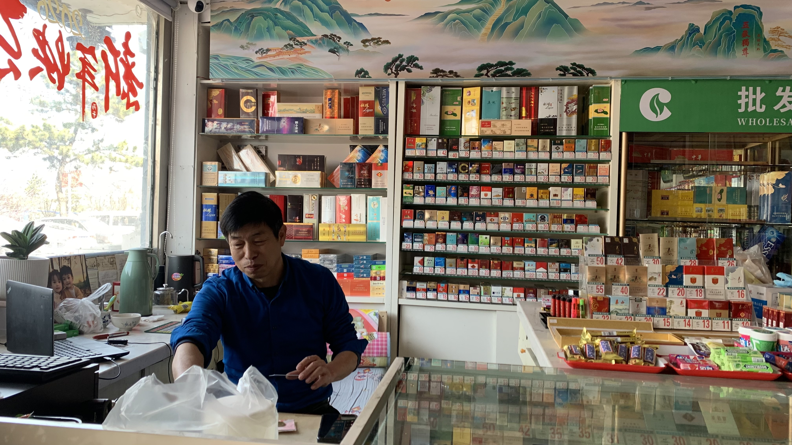
大約12點，老闆跟中醫師說帶他去問問搭船的地方再給他推薦吃的吧。離開前老闆問還會再來威海嗎？我想了一下，也許很難了。問老闆能不能給他拍張照片，老闆說好，然而不看鏡頭。
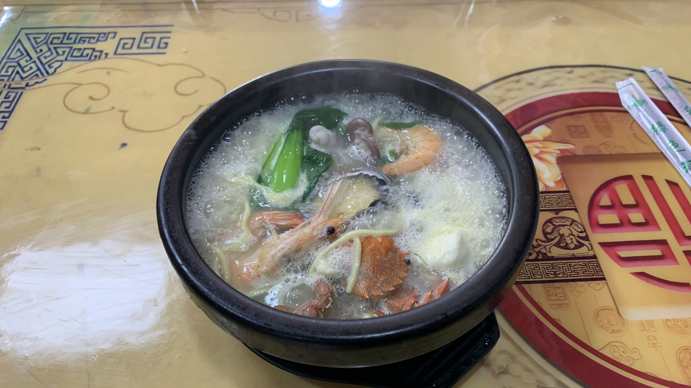
問完搭船地點後，走回同一排建築，找了間東北餐廳，這碗豪華海鮮麵是中國段的第一餐。
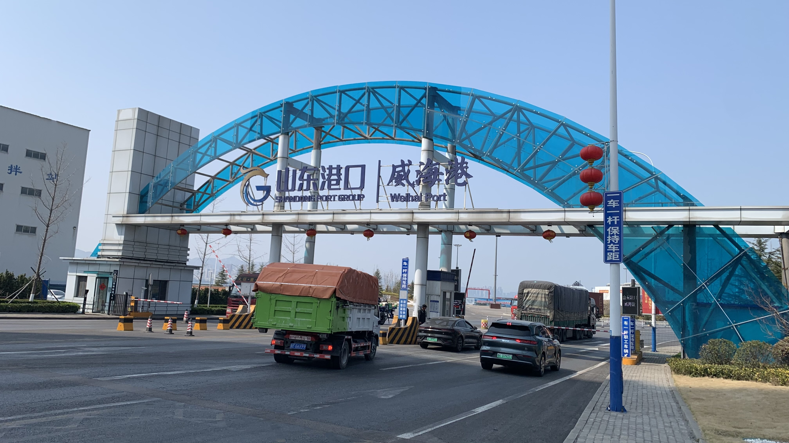
吃飽後往市區方向移動，轉彎處發現應該就是這個港口。想進去探路，但是警衛說晚上七點再來，現在隨便要去哪裡玩都可以。
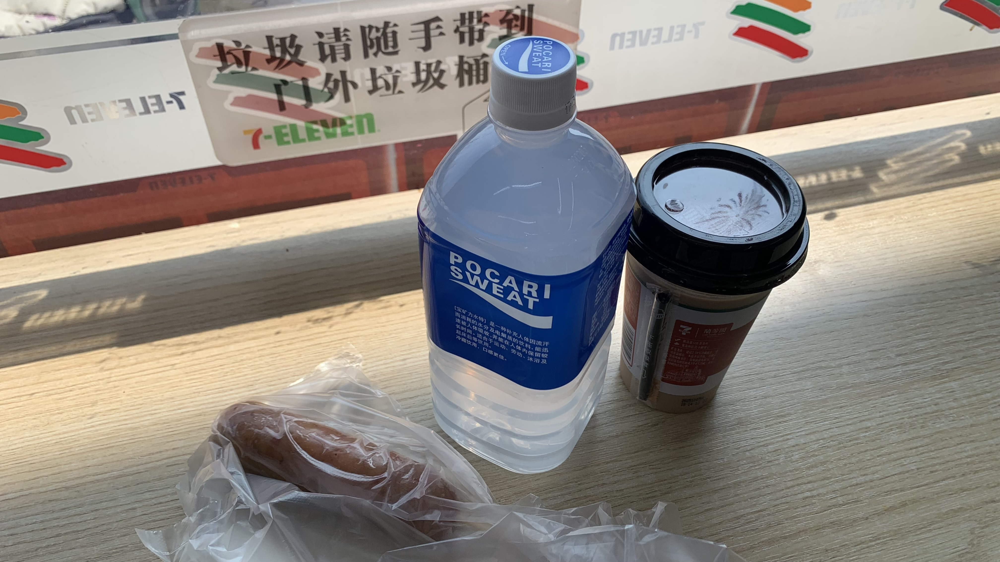
只好隨便去哪裡玩一下了。經過一個開發中的商城，找不到蛋白飲，因此買了烤香腸。
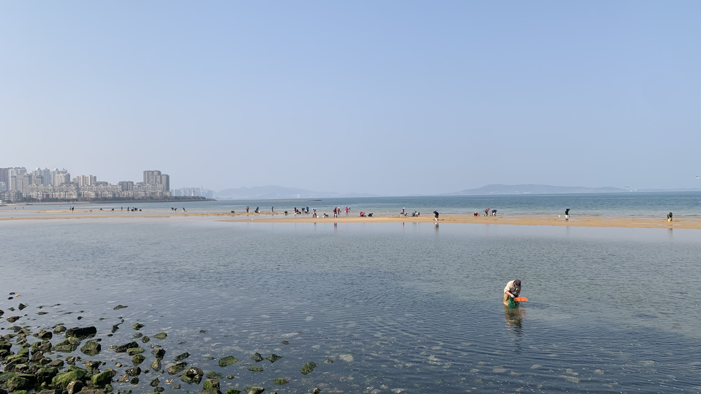
沿著海邊走了一段路，發現很多人在挖蛤蜊，就坐下吃個香腸喝咖啡欣賞海景。
此時兩個散步的大爺先用在不遠處用眼神向我示意，我回以眼神。他們於是走近二十三號。
其中一位大爺先開口：「是騎行的？」
「對的。」我說。
「從哪裡來的?」大爺接著問。
「從京都來的。」我回道。
「接下來去哪裡？」此時身邊漸漸聚集了一些人觀賞我和大爺間的對話。
「接下來騎往蒙古，之後去巴黎。」
「台灣現在局勢怎麼樣？」大爺問。「什麼樣的局勢？」大爺尬了幾秒，周遭的人一陣哄笑。
比較高的大爺對這話題沒啥興趣，插了話說：「那肯定是做什麼研究的。是研究生吧？」
「你怎麼知道的？！」這可是第一個沒有問我是不是拍片網紅的人!
大爺發現自己猜中了，笑著回道：「我聽你說的地方就知道是做什麼研究。」說完一轉身像風一樣地離開。其他圍觀的人也各自散去。
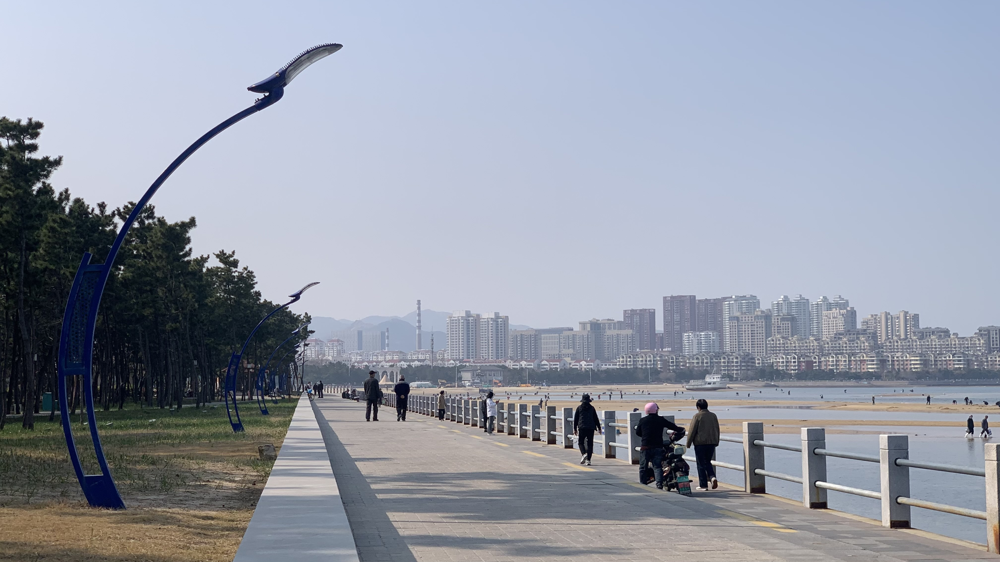
立刻掏出手機拍下兩位大爺遠去的背影，我需要紀念這一刻。
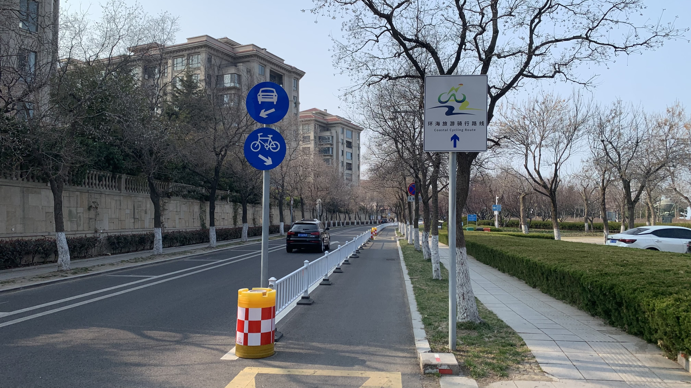
坐得有點冷，看到濱海自行車道的標示，就順著騎了一段路。然而完全看不到海，而且上面騎行的除了我之外都是電動車。
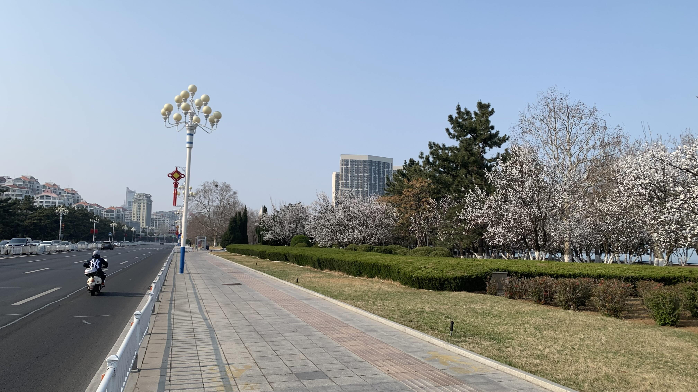
沿著車道慢慢進入市區。想找個地方坐坐。
路邊的櫻花也開了。既然各處都有櫻花，為啥大家都只到日本賞櫻呢？我認為主要還是精神性匹配的問題，在日本賞櫻有種自己在觀看某種人類文化精神的整體感，但是插一棵櫻花在陽明山上，那就是一棵漂亮的櫻花，也就是人和世界的邏輯沒有連結起來。
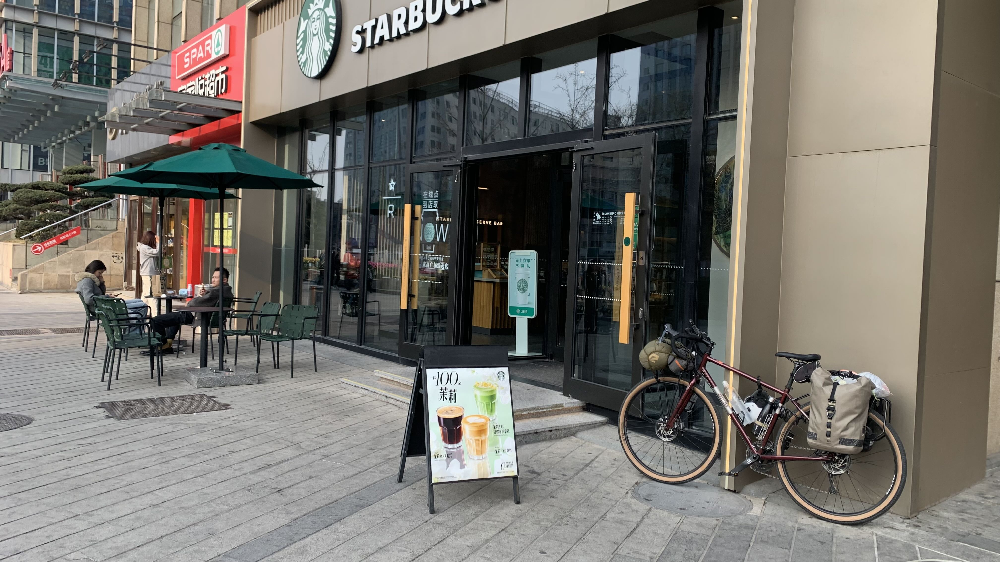
發現商場樓下有間星巴克，本來不知道怎麼繞過來，有兩位當地人看到我站在停車場柵欄邊，問我是不是韓國人，我說是台灣的，他們就比了個大拇指，說你要相信中國人，繞到後面太遠，說著立馬把車扛過柵欄。
雖然一落地就受到各種禮遇，但是心裡其實在想大家都是人類，有好人也有壞人，更多的都是普通人，著實不需要對台灣特別友善的。當然只是心裡想想，還是非常謝謝這些善舉。
在這裡坐到五點半，往港口方向前進。突然想到剛剛經過一家捷安特，也許可以多買條備用內胎。
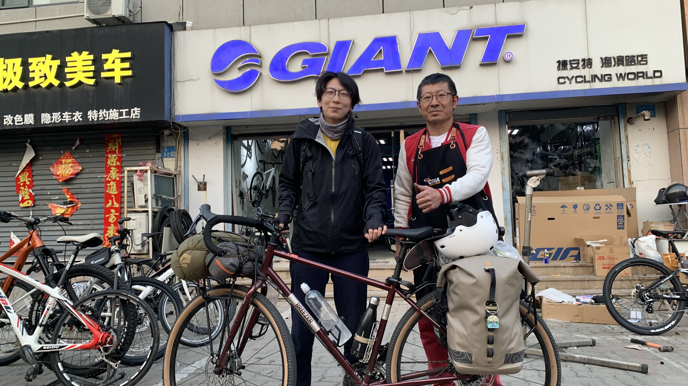
老闆聽說我是台灣人，檢查車子狀況時和我說他2012年跟著捷安特團隊一起到台灣騎車。口中全是對捷安特的感情，以及對創辦人的感念。老闆問我：「劉金標先生在台灣應該也是很有影響力的人吧」，我說當然是的。於是老闆又說起劉先生很不簡單，在全球建立了這麼大的單車環境。
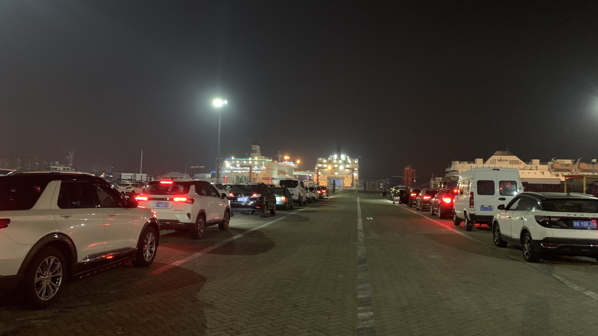
我很喜歡對自己的選擇有忠誠度與熱忱的人，於是問老闆可否幫他拍張照片，老闆說好。但是獨照看來太尬了，想必老闆是個害羞之人。
就在老闆招呼坐在隔壁車店外面看起來無所事事的大叔幫我們拍合照時，我說也用我的手機拍一張吧。
無所事事大叔很幽默，一直問我的後背包在哪裡買的，他也要買。
在老闆數度催促下才拍下這些照片。我們的臉都笑僵了。
回到港口已經有許多車在等待了，安檢員和我說待會我可以騎到最前面。但船上的人還沒準備好，於是把二十三號停在車陣前方的鐵網門，在等候區買了一瓶可樂和薯片。沒多久安檢員進來叫：「騎自行車的，可以過去了。」
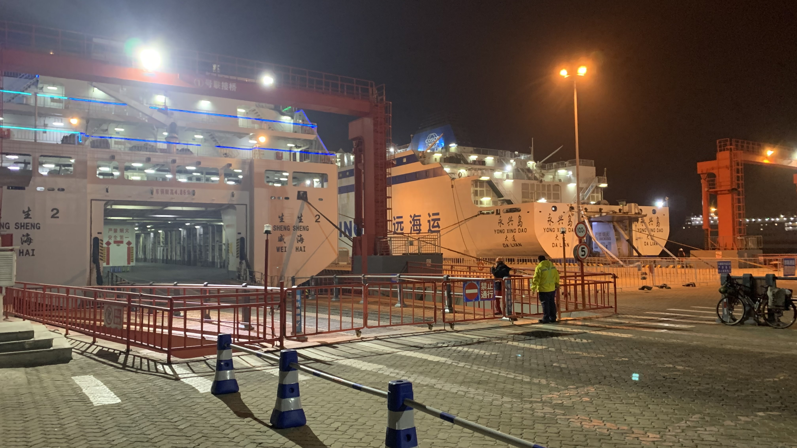
約莫晚上八點，我和另一個騎機車的乘客一起登船。
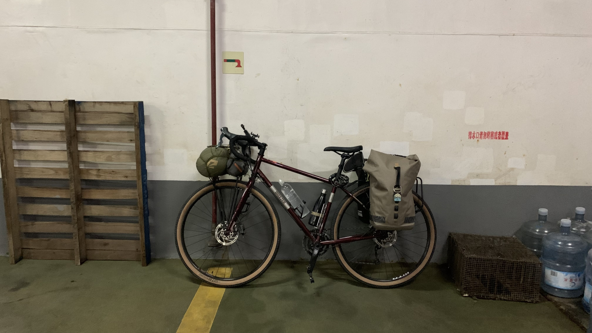
船員說把車靠在牆上，因此就這樣貼在車輛進出的停車區後方。難道船不會晃動嗎？實在不太確定，但是旁邊的木棧板又放得這麼隨性。才剛讓老闆保養好的車子可別摔壞了。
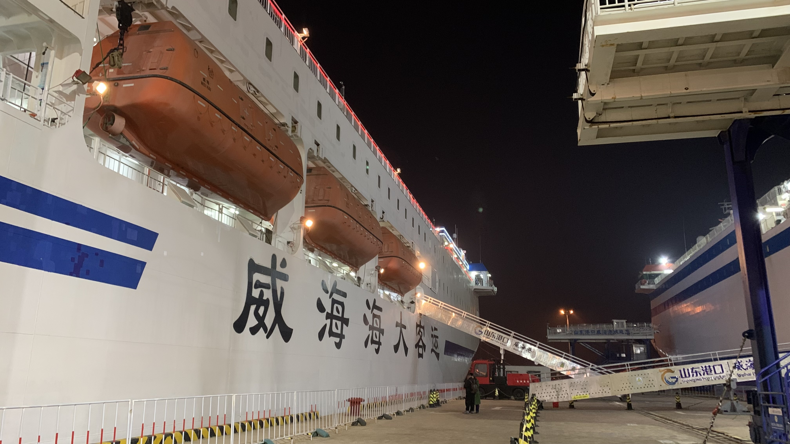
擺好車後船員要我和另一位機車主人趕緊登船，於是匆匆拍了一張照片。
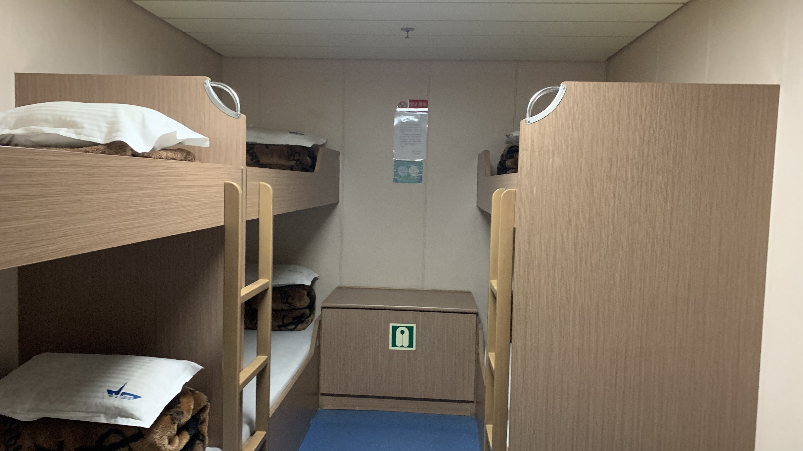
睡的是六人間。記得當時售票員和我說二等艙沒了，但是三等B沒有衛生間喔，我還想說沒有問題的，何必特別提到呢。
確實他是有良心的。廁所的場景相當驚人。
威海的人蠻有趣的，都是不認識的人，卻立刻就能聊起來。性格不一，都很有記憶點。
今日花費： 船票 310+100、衛生紙、士力架、農夫山泉 12 、威海老味麵 32